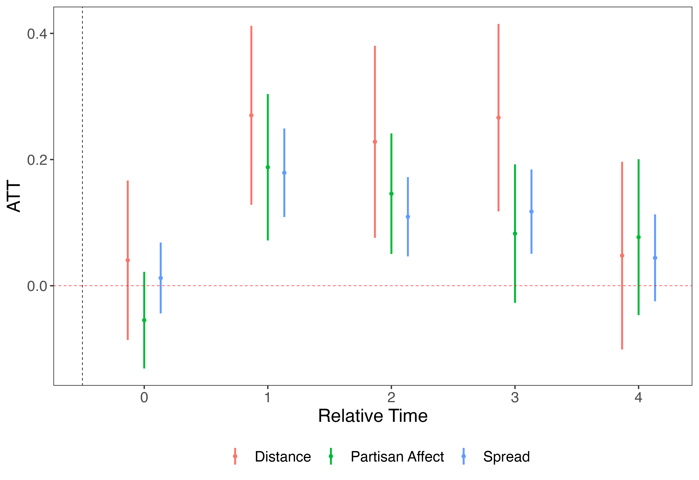
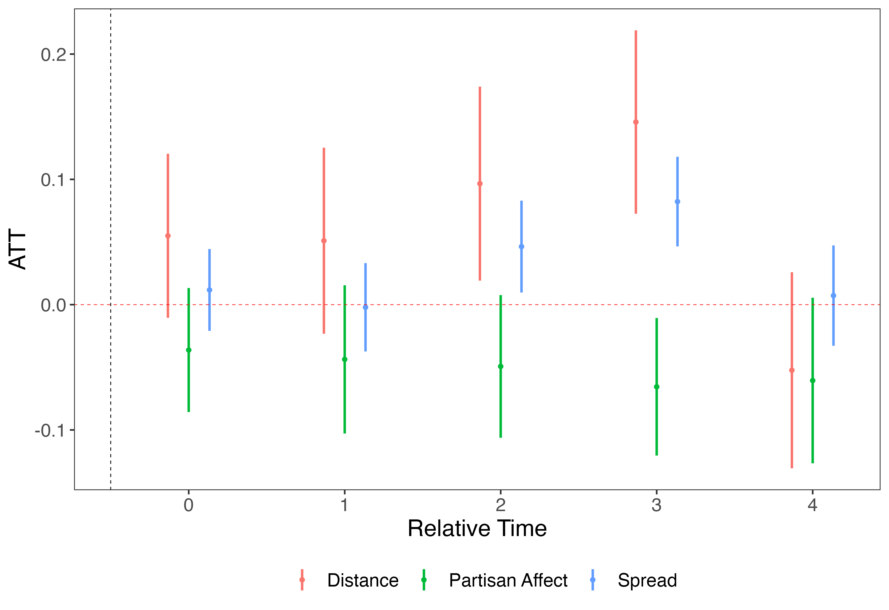
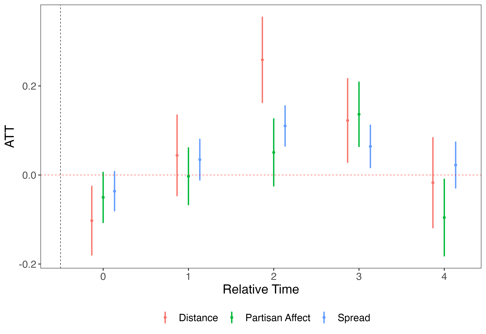
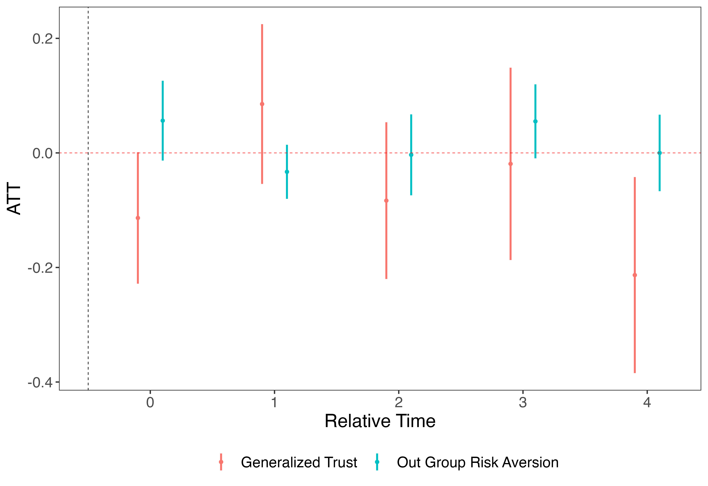
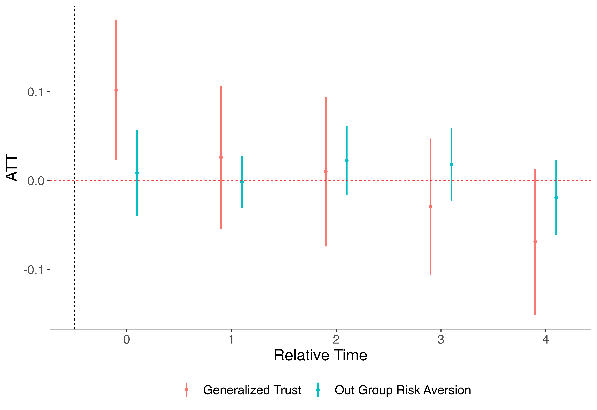
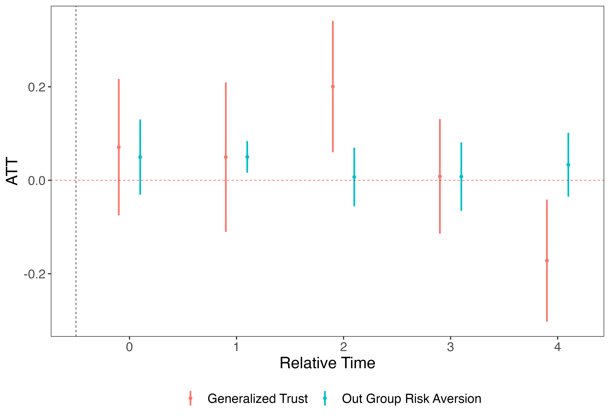
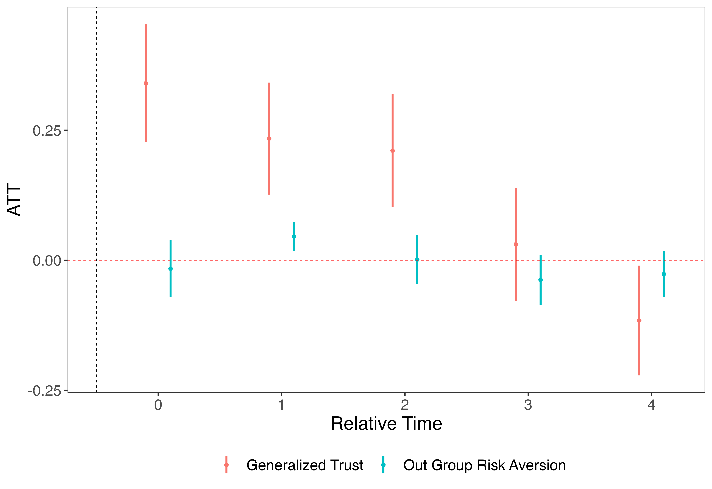

Report
Key takeaways
Analysis of LISS panel survey data (same individual survey in multiple years):
Advantages: allows for robust causal identification
Survey includes both questions that allow us to construct measures of affective polarization and measures of out-group risk aversion
We can use multiple treatments of economic insecurity: (1) unemployment, (2) individual income decrease, (3) household income decrease
Results:
Shocks to individuals’ economic security increase their affective polarization!
So far, I was not able to establish that this is because of increased outgroup risk aversion
Why LISS?
Background:
The LISS (Longitudinal Internet studies for the Social Sciences) is a panel survey that consists of 5,000 households, comprising approx. 7,500 individuals. It is based on a true probability sample of households drawn from the population register by Statistics Netherlands.
Panel members complete online questionnaires every month of about 15 to 30 minutes in total. They are paid for each completed questionnaire. One member in the household provides the household data and updates this information at regular time intervals.
The core longitudinal study is repeated yearly and is designed to follow changes in the life course and living conditions of the panel members.
Why is this useful?
Panel data is among the strongest data types when it comes to causal inference. Panel data allows the researcher to configure a within-subject research design that tracks individuals during an extended period of economic volatility.
These kinds of research designs are superior to cross-sectional survey data in which scholars find correlations between measures of survey respondents’ economic standing and their political views. With this type of evidence a causal link between the two measures remains unclear: It could be that individuals’ economic circumstances shape their attitudes; Yet it is also plausible that an unobservable characteristic—such as people’s upbringing, or the influence of their parents—explains their political preferences and their standing in economic context (see Margalit 2013).
Treatment Variables
I construct four different treatment variables that capture some form of increased economic insecurity.
Unemployment: An individual is treated in a time period if she is unemployed.
Income decrease: The LISS includes a variable where individuals assert under which category they fall income-wise. An individual is treated if the indicated income category is lower in a given year compared to the previous year.
Substantial income decrease: The same variable as before is used, but now an individual is treated when the indicated income category is at least two levels lower in a given year compared to the previous year.
Household income decrease: Because economic (in)security can also depend on the economic situation of other household members (such as one’s partner), this variable indicates that an individual is treated if her household income falls by at least 25% as compared to the previous year.
Outcome variables
I construct three different outcome variables that capture affective polarization.
Partisan Affect
This is constructed following Boxell, Gentzkow, Shapiro (2022) and is very similar to the measures by Gidron et al (2020) and Reiljan (2020).
It reflects the extent to which an individual expresses a more favorable attitude toward her own party than toward other parties. This is based on questions about party identification (for defining her own party) and on thermometer scores for all parties.
In particular, we code an individual’s party affection based on two questions:
“Which political party are you an adherent of?”
“Do you feel more attracted to one of the political parties than to others?”
If an individual indicates a specific party for any of the two questions (the first question being treated as first order), we code her to be a partisan of that party.
For the thermometer scores we use the following question:
- “What do you think of the [party name]?”
Respondents can choose from a 0-10 discrete scale where 0 is “very unsympathetic” and 10 “very sympathetic”.
From this, we calculate the thermometer score of respondents for each party.
For a partisan’s “ingroup score” we choose the thermometer score of the partisan with respect to her own party. Note, that in a very small number of cases respondents are coded as partisans of more than one party. We then select the party based on the highest thermometer score for a respective individual.
For the final partisan affect measure, we calculate the distance between the thermometer score for the ingroup party (\(like_{ip(i)t}\)) and each outgroup party (\(like_{ip't}\)) , weight this distance by the outgroup party’s respective vote share in the last parliamentary election, and sum these weighted scores across all parties for each individual.
\[ \text{Partisan Affect}_{it} = \sum_{p' \in P_t\backslash p(i)} \frac{v_{p'}}{v_{P_t}-v_{p(i)}}\left(like_{ip(i)t}-like_{ip't}\right). \]
Weighted Spread
The major weakness of the above described measure is that it captures affective polarization only among self-declared partisans. In the LISS data, only 36% indicate that they are either an adherent of or attracted to a party.
Therefore, we also construct two additional measures proposed by Wagner (2021).
First, we calculate affective polarization as the weighted average party affect difference compared to each respondent’s weighted average party affect.
\[\text{Spread}_{it} = \sqrt{\sum_{p=1}^{P_t} \frac{v_{p_t}}{v_{P_t}}\left({like}_{ipt}-\overline{{like}_{it}}\right)^2}. \]
where the mean affect is calculated as a weighted mean:
\[ \overline{{like}_{it}} = \sum^{P_t}_{p=1}\left(v_{p_t} \times like_{ipt}\right). \]
Weighted Distance
The second measure conceives affective polarization as the average affective distance of other parties from one’s most liked party. It captures how much lower on average an individual’s affect for other parties is:
\[\text{Distance}_{it} = \sqrt{\sum_{p=1}^{P_t} \frac{v_{p_t}}{v_{P_t}}\left({like}_{ipt}-{like}_{max,it}\right)^2}. \]
Method
We employ the matching estimator designed by Imai, Kim, and Wang (2021). In particular, we construct a matched set of treatment and control units based on pre-treatment control observations and outcome variable trends from units in the same time period that have an identical treatment history up to four years before treatment. We use covariate balacing propensity score weighting to construct the matched set. We allow for treatment reversal as units can become employed again or increase their income after having experienced an economic shock. We then employ a difference-in-differences estimator to estimate the average treatment effect for the treated (ATT). For pre-treatment control observations we use respondents’ age, education, number of children, whether they have a partner, and monthly income in the year before treatment (to avoid post-treatment bias).
The advantage of this method compared to other methods for analyzing panel data (such as recent estimators proposed for the study of staggered policy adoptions) is that it allows respondents to be treated at any point in time, and repondents to switch their treatment status multiple times over time.
Results
The following plots show the average treatment effect for the treated at the time of treatment and the next four years.
Unemployment

Income Decrease

Drastic Income Decrease (at least two points)
Household income decrease (25%)

Mechanism
Our theory predicts that affective polarization decreases because people seek lower-risk in-group interactions and shy away from more risky out-group interactions when the economic environment favors risk aversion (see Bryson et al., 2020).
As mentioned above, one advantage of the LISS data is that apart from containing questions that allow us to measure affective polarization it also contains questions that we can use to operationalize aversion to out-group interaction.
In particular, we construct the following two measures:
Generalized trust
Generalized trust is measured on a 10 point scale:
- “Generally speaking, would you say that most people can be trusted, or that you can't be too careful in dealing with people? Please indicate a score of 0 to 10.”
Aversion to outgroup interaction
Next, we construct a measure that captures individuals’ aversion to outgroup interaction. This is constructed by conducting a principal component analysis (PCA) - a dimension-reduction technique that projects high-dimensional data onto a low-dimensional space and parametrically assigns differential weights to each question - to systematically uncover a latent dimension of aversion to outgroup interaction. We use multiple questions that should capture one’s aversion:
- “Generally speaking, would you say that most people can be trusted, or that you can't be too careful in dealing with people? Please indicate a score of 0 to 10.”
“I feel little concern for others”: 1 (very inaccurate)-5 (very accurate)
“I am interested in people”: 1 (very inaccurate)-5 (very accurate)
“I feel comfortable around people”: 1 (very inaccurate)-5 (very accurate)
“I insult people”: 1 (very inaccurate)-5 (very accurate)
“I sympathize with others’ feelings”: 1 (very inaccurate)-5 (very accurate)
“I am not interested in other peoples’ problems”: 1 (very inaccurate)-5 (very accurate)
“I talk to a lot of different people at parties”: 1 (very inaccurate)-5 (very accurate)
“I am not really interested in others”: 1 (very inaccurate)-5 (very accurate)
“I feel others’ emotions”: 1 (very inaccurate)-5 (very accurate)
“I am quiet around strangers”: 1 (very inaccurate)-5 (very accurate)
“Which values act as a guiding principle in your life and which values are less important to you? - Open-minded”: 1 extremely unimportant - 7 extremely important
“Please indicate to what extent you generally feel connected to other people”: 1 not connected (circle) - 7 very connected (circle)
We reduce each respondents answers to these questions to one dimension via PCA (explains 35% variation). Higher values denote lower risk aversion towards out group. Lower values denote higher risk aversion towards out group.
We use the same matching DiD estimator as above.
Unemployment

Income decrease

Drastic income decrease

Household income decrease

Evidently, economic insecurity does not significantly change people’s risk aversion towards the outgroup in these models. The results are oftentimes insignificant and sometimes even contrary to our expectations.